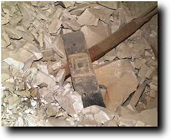
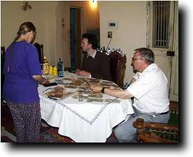

Monday 14 December
We had a full day with the winch today, and things seem to be running well. Today in shaft I we began to take back the biggest area of debris blocking the corridor, which is no more than 40 cm from the ceiling. Here is a photograph of the stairway beyond the corridor.
The material is giving away few secrets at present, but there are a lot of black coffin fragments, some with decoration in yellow. These are very characteristic of the middle 18th dynasty, and we are pretty sure that we are dealing with the burial place of Senneferi. One fragment bearing the hieroglyphs n k3 n 'for the ka-spirit of' was noticed; this would normally be followed by a name...
|

Today we entered through a small hole the doorway discovered the previous day off Shaft H. It extends about 1.5 m east and north, but unusually goes back on itself in a westerly direction. It seems not too full of debris; a few human remains were noted on a quick inspection. However, we want to get to the bottom of the shaft before we excavate it.
Photos were made of the roman amphora shown in yesterday's report, and of the linen with the titulary of Shabaka mentioned a few days back.
|
Sunday 13 December
The big event of the day was the introduction of a winch into Shaft I of TT99. This winch was brought into Qurna by Erhart Graefe, whose team has been working in the Deir el-Bahari Royal Cache, and we have been able to borrow it. The idea is that it will be able to move larger quantities of debris more efficiently than using a conventional rope and pulley. It normally runs off a generator, but at present we feel that the vibrations of such a machine are not a good idea in an area honeycombed with tombs, so we are trying to run it off the electricity supply.
Most of the workmen took a hand in assembling it. It can also be used to move people up and down the shaft. Our impression is that it increased the flow of work by at least 50%.
Progress today in the shafts was good. In Shaft H we have revealed more of the top of the room, while in Shaft I, we have cleared about another 2 m along the corridor. Tony Waldron has today finished the bone work, and leaves early tomorrow morning. Julie Dawson continued with a condition survey of the ceilings, followed by cleaning away the dirt on some additional sections. Pottery drawing continued, and great progress has been made on reassembling a 1st century AD Roman amphora, an unusual vessel type in Egypt.
|

Also today we visited the last day of the local festival of Abul Qumsan. We have made a separate page of pictures of this event.
|
Saturday 12 December
Much of today has been taken up with attending to the needs of the film crew, who are entering their last week with us. So there has been a lot of time speaking to a camera!
Nonetheless, all the projects are progressing well. Tony Waldron has nearly finished the bone, while Pamela Rose and Gillian Pyke are making rapid progress with drawing. Julie Dawson has been cleaning a face of a coffin which she has been working on in spare moments for a couple of seasons.
|
Out on the dig, we are almost down to the bedrock in the first two metres of the corridor in Shaft I. The final layer of debris is very stony and contains little material. The picture shows the clearing of the last area of this debris. In Shaft H, progress downwards was steady; right at the end of the day, an opening appeared in the east side, in the region of 4 m deep. Could this be the second shaft Mond mentions as being here?
The day ended with the workmen being paid. It is conventional to pay the men every 10 working days; this makes the arithmetic more simple. I was too busy to photograph the event, but we did take a picture of the money being counted the previous evening.

|

 The Dig Diary 1998--Part 4
The Dig Diary 1998--Part 4